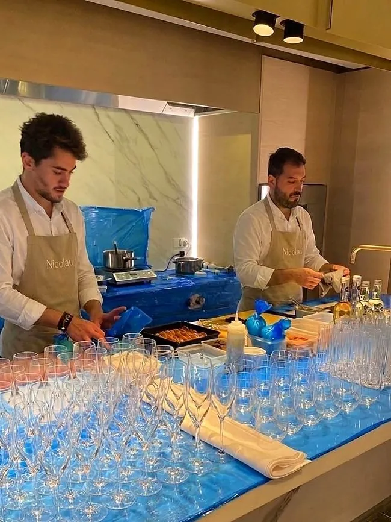
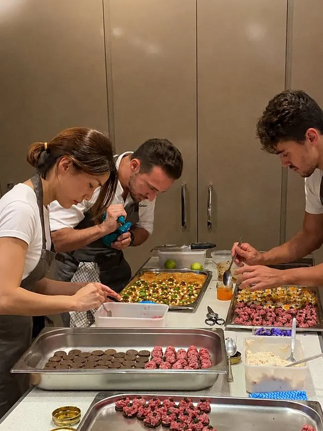
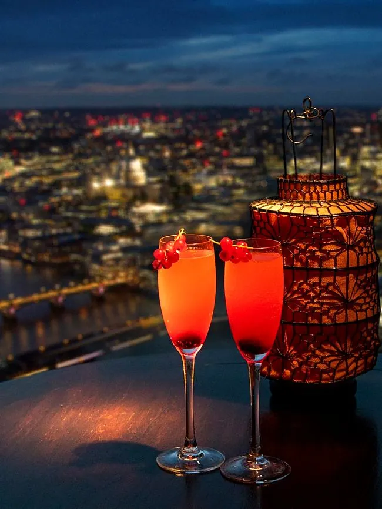
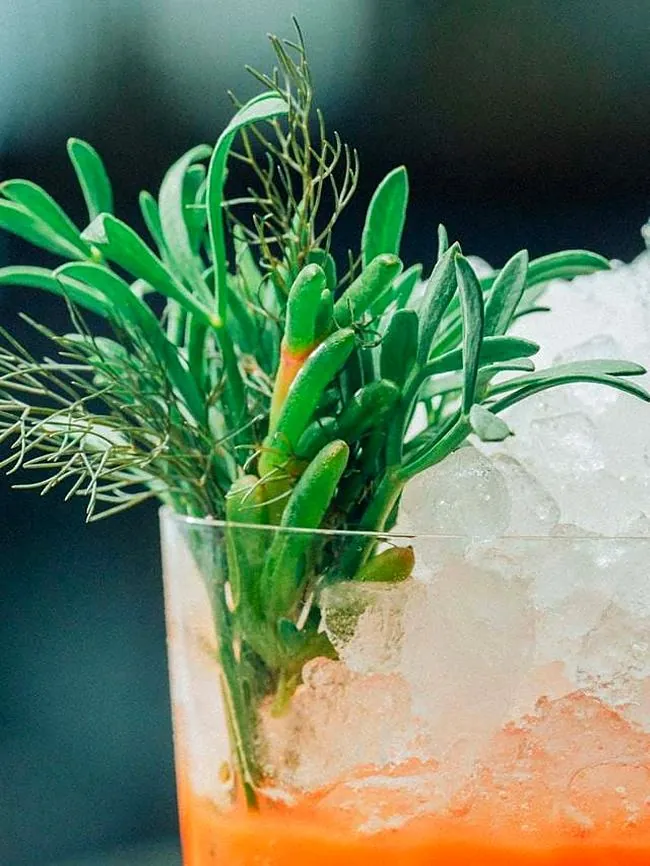

Bar & Cocktails
A cocktail service built the same way as the food: proper ingredients, real technique, and a team that knows exactly what they're doing.



Cocktail Experts, Not an Afterthought
Most private dining teams treat the bar as an add-on. We don't. Cocktails are built to the same standard as the food: fresh juices, house-made syrups and cordials, proper ice, and a drinks menu designed around your event rather than a generic list handed to every client.
Whether it's a welcome cocktail for forty guests or a full evening's drinks service behind a dedicated bar, every serve is made to order, by hand, in front of your guests.

Reputable Bartenders, A Team You Can Trust
Behind every event is a small, experienced team of bartenders who have worked some of London's best bars and private venues. They arrive early, build a full working bar wherever your event is, and run it start to finish, so you never have to think about it.
It's the same philosophy as the kitchen: hire people who genuinely know what they're doing, give them good product to work with, and let them do their job properly.
Ask About Bar ServiceOn the Night
From a welcome cocktail on arrival to a full bar running all evening.


How the bar works
01Welcome drinks and signature serves
Most events begin with one drink that sets the tone. We design a short signature menu around your occasion: a classic made precisely, a seasonal twist built on fresh fruit and herbs, and a low-alcohol or alcohol-free option that is given the same care as everything else. Syrups, cordials and infusions are made in advance so service stays calm and quick.
02Pairing drinks with the menu
When the bar and the kitchen are planned together, drinks can echo the food: a citrus-led aperitif before raw fish, a bitter, herbal serve ahead of a rich main, a dessert cocktail in place of a sweet wine. Alejandro talks through the menu with the bar team so flavours complement rather than compete.
03Alcohol-free and mindful drinking
Guests who don't drink should never feel like an afterthought. Alcohol-free serves are built with the same technique: shrubs, cold-infusions, house sodas and fresh juices, presented in the same glassware as the cocktails. Wine, spirit and non-alcoholic pairings can be offered side by side at the table.
04Setting up the bar at your venue
The team arrives early and builds a complete working bar at your home, marquee, yacht or venue: glassware, ice, tools, garnishes and a tidy service station. Everything is cleared and the space left as it was found. Tell us the space available and guest count through the enquiry form and we plan the layout around it.
05Events the bar suits
From a cocktail hour before a seated dinner to a standalone drinks reception, the bar team works alongside the kitchen at private dinners, birthdays, weddings, corporate evenings and yacht charters, in London and across the UK. It also pairs naturally with canapé service for receptions.
Bar & cocktails: FAQs
Can the bar be booked without the food?
Yes. Bar service can be arranged on its own for drinks receptions and parties, or combined with a chef's dinner. Send the date, guest count and ideas through the enquiry form.
Do you work with our own spirits and wine?
Yes, the team can serve your own bottles, advise on additions to complete a menu, or plan the full drinks list with you.
Is a bespoke cocktail menu included?
Each event gets a menu shaped around the occasion, the season and your tastes, rather than a generic list.
Can you cater for non-drinkers?
Absolutely. Alcohol-free serves are designed alongside the cocktails and offered with the same presentation.